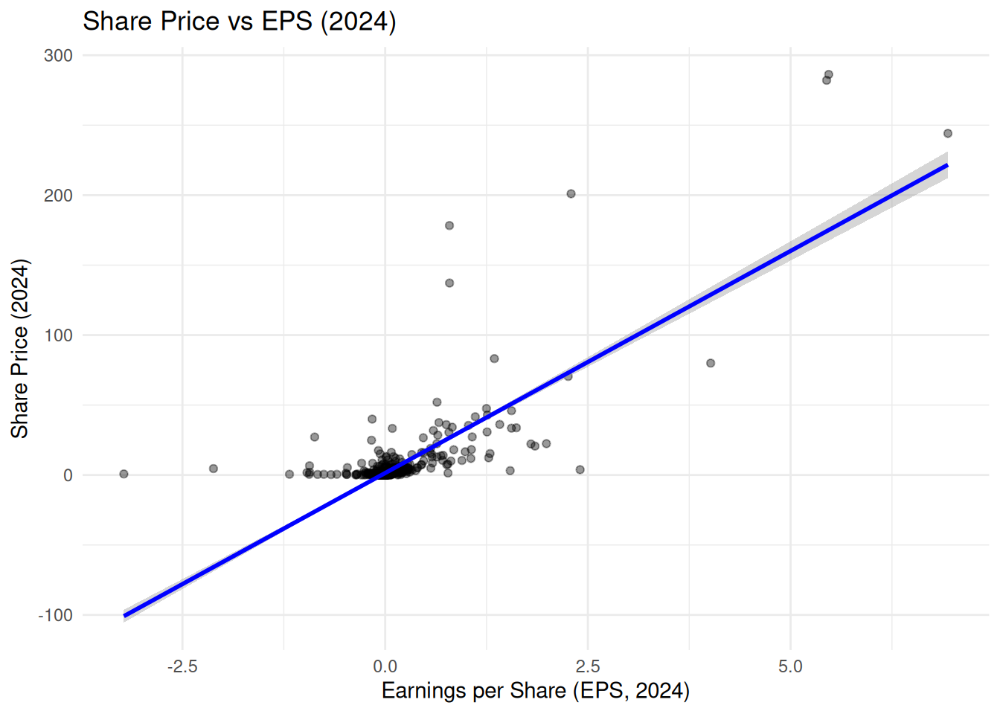

library(tidyverse) # collection of packages for data manipulation and visualizationTutorial 5: Shaping and Joining Data for Business Analytics
Learning Goals
By the end of this tutorial, you should be able to:
- Recognize the difference between tidy and messy data, and use
pivot_longer()to tidy up wide data. - Summarize and visualise financial data, and explain why tidy formats make analysis easier.
- Plot and interpret relationships between share price and earnings per share (EPS).
- Combine data from multiple tables using joins (
left_join(),inner_join(),anti_join()), and understand what each join includes or excludes.
The Business Challenge
The Topic: How well do Australian firms’ earnings explain what investors are willing to pay for these companies?
Share prices of Australia’s biggest companies go up and down every day. These changes reflect how investors feel about the company’s future earnings — based on news, forecasts, and the broader economy.
Two key numbers help us understand this:
Earnings per share (EPS), tells us how much profit a company earns for each share:
\[ \text{EPS} = \frac{\text{Profit}}{\text{Shares Outstanding}} \]
The Price-to-Earnings (P/E) Ratio shows how much investors are willing to pay for $1 of earnings:
\[ \text{P/E} = \frac{\text{Share Price}}{\text{EPS}} \]
To tie these measures back to our earlier material on firm’s Earnings Before Interest and Taxes (EBIT), we can define firm’s earnings that are ultimately paid out to shareholders as follows:
\[ \text{Earnings} = \text{EBIT} - \text{Interest} - \text{Taxes} \]
We’ll use real data from major Australian companies listed on the ASX to practise cleaning, combining, and analysing financial variables like EPS and the P/E ratio. In particular we will:
- Tidy messy financial data
- Join multiple datasets together
The Data: Stock Price Data from Yahoo Finance
Here’s a simplified and more student-friendly version:
The Method: Shaping and Combining Data with tidyr and dplyr
Data often needs cleaning before it’s ready to analyse. It might be too wide (with different years in separate columns), too long, or split across multiple files.
In this tutorial, we’ll use two tidyverse tools to fix that:
tidyr: to reshape messy data using functions likepivot_longer()dplyr: to join different datasets together and spot what’s missing
These tools will help us:
- Make messy data easier to work with
- Combine company data with industry labels
Getting set up and loading the data
Loading the Data
R packages for today
Prepare these Exercises before Class
Prepare these exercises before coming to class. Plan to spend 45 minutes on these exercises.
::: {.callout-important title = “Switch on the eval flag when you want to evaluate code!”} In the R code chunks below we have provided starter code for you to work from. We have set the key eval to the value false so that they are not run because they have syntax such as YOUR_VALUE_HERE which would generate errors.
Switch the eval value to true when you want the R code within a chunk to be run when you compile your document. :::
Exercise 1: Identifying Issues with Un-tidy Data
We’ll start with a deliberately messy version of the ASX stock price data. Run the following code to load and implement some preliminary manipulations to this dataset.
asx_prices_messy <-
read_csv("data/asx_prices_messy.csv")asx_prices_messy |>
select(gvkey, conm, price_2023, price_2024,
eps_2023, eps_2024) |>
head(10)# A tibble: 10 × 6
gvkey conm price_2023 price_2024 eps_2023 eps_2024
<chr> <chr> <dbl> <dbl> <dbl> <dbl>
1 327267 1414 DEGREES LTD 0.04 0.067 -0.0091 -0.0107
2 349318 29METALS LIMITED 0.375 NA -0.799 NA
3 284698 3D ENERGI LIMITED 0.056 0.07 0.0129 -0.0075
4 317959 3P LEARNING LTD 1.27 1.02 0.023 -0.208
5 339106 4DMEDICAL LTD 0.45 0.675 -0.105 -0.0971
6 314650 4DS MEMORY LTD 0.135 0.084 -0.0038 -0.0031
7 324960 5E ADVANCED MATERIALS INC 2.26 0.54 -0.7 -1.18
8 325746 5G NETWORKS LIMITED 0.125 0.148 -0.0579 -0.0836
9 253429 88 ENERGY LTD 0.005 NA -0.0006 NA
10 323980 8COMMON LTD 0.075 0.041 -0.0147 -0.0114(a). In what ways is this data frame not tidy? Be specific: which tidy‑data principles are violated?
(b). Suppose we want the average share price across all firms for the period 2023–2024. With this messy layout you will need to compute sum and counts across columns (i.e., sum prices for 2023, for 2024; then, count non-missing observations in these columns for 2023, 2024, etc). Use the starter code below to compute the average share price across all firms for the period 2023-2024.
asx_prices_messy |>
summarise(
# Sum the prices from the 2023 year
sum_prices_2023 = sum(YOUR_CODE_HERE, na.rm = TRUE),
# Sum the prices from the 2024 year
sum_prices_2024 = sum(YOUR_CODE_HERE, na.rm = TRUE),
# Count the number of firms with non-missing
# prices in 2023
count_firms_2023 = sum(!is.na(price_2023)),
# Count the number of firms with non-missing
# prices in 2024
count_firms_2024 = sum(!is.na(price_2024))
) |>
mutate(
# Compute the total sum of prices across both years
total_sum = YOUR_CODE_HERE + YOUR_CODE_HERE,
# Compute the total count of firms across both years
total_count = count_firms_2023 + count_firms_2024
) |>
mutate(
# Manually compute the average
avg_price_23_24 = YOUR_CODE_HERE / YOUR_CODE_HERE
) |>
select(avg_price_23_24)(c) Explain why the approach we took in (b) doesn’t scale well as more years of data are added.
(d) Examining relationships between variables in a messy data frame can be especially tricky. Suppose we want to see whether share price and earnings per share are correlated in 2024. With this messy structure we must hard-code the year’s columns:
asx_prices_messy |>
filter(eps_2024 > -5) |>
ggplot(aes(x = eps_2024, y = price_2024)) +
geom_point(alpha = 0.4) +
geom_smooth(method = "lm", se = TRUE, color = "blue") +
labs(
title = "Share Price vs EPS (2024)",
x = "Earnings per Share (EPS, 2024)",
y = "Share Price (2024)"
) +
theme_minimal()
Based on this plot, what relationship do you see in 2024? Why does this make sense economically (what are investors “buying” when they invest)?
(e). Now imagine you also wanted to include 2023 in the same analysis. You do not need to implement code to add these data points to the plot above — just explain the steps you’d need to take.
- Which additional columns would you need to reference in the data?
- How would your plotting code change?
- What problems do you foresee if you wanted to extend this further to 2019–2024?
Exercise 2: Combining Datasets
In this exercise, we’ll combine two or more data frames using joins. Sometimes, joining adds columns. Other times, it can add rows when duplicate keys exist.
Let’s walk through both situations.
To start, let’s load the necessary data for this exercise - for two of these datasets, the code below also does some ‘light’ wrangling (similar to what we did to our datasets in last week’s tutorial):
firm_codes <-
read_csv("data/asx_200_2024.csv") |>
select(gvkey, conm, gsubind)
subindustry_names <-
read_csv("data/GICS_subindustry.csv")
pe_data <-
read_csv("data/pe.csv") |>
select(gvkey, fyear, pe) |>
filter(!is.na(pe)) |>
arrange(gvkey, fyear)(a). We start with a data frame that lists each firm’s subindustry code (gsubind), using the largest 200 firms on the ASX in 2024:
firm_codes |>
head(10)# A tibble: 10 × 3
gvkey conm gsubind
<chr> <chr> <dbl>
1 013312 BHP GROUP LTD 15104020
2 210216 TELSTRA GROUP LIMITED 50101020
3 223003 CSL LTD 35201010
4 212650 TRANSURBAN GROUP 20305020
5 100894 WOOLWORTHS GROUP LTD 30101030
6 212427 FORTESCUE LTD 15104050
7 101601 WESFARMERS LTD 25503030
8 226744 RAMSAY HEALTH CARE LTD 35102020
9 220244 QANTAS AIRWAYS LTD 20302010
10 017525 ORIGIN ENERGY LTD 55101010We also have a lookup table that tells us the name of each subindustry:
subindustry_names |>
head(10)# A tibble: 10 × 2
gsubind subind
<dbl> <chr>
1 10101010 Oil & Gas Drilling
2 10101020 Oil & Gas Equipment & Services
3 10102010 Integrated Oil & Gas
4 10102020 Oil & Gas Exploration & Production
5 10102030 Oil & Gas Refining & Marketing
6 10102040 Oil & Gas Storage & Transportation
7 10102050 Coal & Consumable Fuels
8 15101010 Commodity Chemicals
9 15101020 Diversified Chemicals
10 15101030 Fertilizers & Agricultural ChemicalsUse a left join to add the subindustry name to each firm in the firm_codes dataset using the variable gsubind as the join key. The code below gets you started:
firm_info <-
YOUR_DATASET_NAME |>
left_join(YOUR_DATASET_NAME, by = "YOUR_VARIABLE_NAME")
firm_info |>
head(10)(b). What kind of join did we just perform? To help answer this question, consider the following:
- What kind of thing are we adding: columns or rows?
- Did each
gsubindonly appear once in the datasetsubindustry_names? - Does this kind of join have a name? If so, what is it?
(c).
Now let’s bring in PE ratio data, which has multiple years per firm:
pe_data |>
head(10)# A tibble: 10 × 3
gvkey fyear pe
<chr> <dbl> <dbl>
1 005302 2008 41.7
2 010991 2004 27.2
3 010991 2005 41.8
4 010991 2006 45.0
5 010991 2007 29.7
6 010991 2008 135.
7 010991 2021 979.
8 010991 2023 57.0
9 013312 2005 21.3
10 013312 2006 14.8Use a left join to add the P/E data to each firm in the firm_info dataset using the variable gvkey as the join key. Use the starter code below to implement this join:
firm_pe_data <-
YOUR_DATASET_NAME |>
YOUR_JOIN_TYPE(YOUR_DATASET_NAME, by = "YOUR_VARIABLE_NAME")
firm_pe_data |>
head(10) |>
select(pe, everything())(d). What kind of join did we just perform? To help answer this question, consider the following:
- What kind of thing are we adding: columns or rows?
- How many rows are in the dataset
firm_pe_data? How aboutfirm_info? - Does each
gvkeyin the original table (firm_info) now appear once or multiple times in the ‘joined’ data frame (firm_pe_data)? Why? - Does this kind of join have a name? If so, what is it?
Exercise 3: Tidying and Unlocking Scalable Insights
(a). We’ll now tidy the messy stock price dataset from Exercise 1 so we can more easily analyse and visualise it. Use the starter code below to turn your wide-format data back into a tidy format using pivot_longer().
asx_prices_tidy <-
asx_prices_messy |>
pivot_longer(
cols = YOUR_CODE_HERE,
names_to = c(".value", "fyear"),
names_sep = YOUR_CODE_HERE,
values_drop_na = TRUE
) |>
mutate(fyear = as.numeric(fyear))
asx_prices_tidy |>
head(10)(b). Why is this structure better for analysis? Why might calculations or visualisations now be easier?
(c). Let’s re-do a simple tasks from Exercise 1, that was quite complicated to implement — and see how much easier it is now that our data is tidy. What’s the average share price for all firms across 2023 and 2024?
asx_prices_tidy |>
YOUR_CODE(fyear %in% c(YOUR_YEARS)) |>
YOUR_CODE(avg_price = mean(YOUR_VARIABLE, na.rm = TRUE))(d). Let’s re-do our plot from Exercise 1 too. Plot price vs EPS over the full sample (2019–2024).
(e). Suppose we wanted to modify the plot in (d) to only include the years 2023 and 2024. Modify the code you just wrote to make this change by adding one new line of code.
(f). What kind of relationship do you observe in the plot in (d)? What might explain firms that lie above or below the fitted line? For EPS < 0, does our line-of-best-fit ‘make sense’?
Exercise 4: What’s Missing? Understanding Joins by Seeing What They Drop
In Exercise 2, we used left_join() to combine data from different tables — like firm details, subindustry names, and P/E ratios. That helped us build one data frame with all the information in one place. Now, we’ll go a step further and explore what different kinds of joins keep and drop. This can help us spot missing or underrepresented data — and understand our dataset more deeply.
(a). Let’s start by counting how many firms in the ASX200 belong to each subindustry. Use the starter code below to return the three most common industries:
firm_info |>
YOUR_CODE(subind) |>
YOUR_CODE(desc(n)) |>
YOUR_CODE(3)And, now the three least common:
firm_info |>
YOUR_CODE(subind) |>
YOUR_CODE((n)) |>
YOUR_CODE(3)(b). Are there any subindustries that don’t appear in the ASX200 sample-and so are even less common those that we identify in (a)?
We can use anti_join() to find subindustries listed in subindustry_names but missing from our firms data. How many subindustries are not included in the ASX200?
YOUR_CODE |>
YOUR_CODE(firm_info, by = "subind") |>
nrow()(c). What kinds of industries are missing? Why might they be underrepresented in the ASX200?
(d). An inner_join() keeps only the firms that have a matching subindustry in the lookup table. Recreate the join you did in Exercise 2(a), but this time use inner_join() instead of left_join().
firm_info_inner <-
firm_codes |>
YOUR_CODE(subindustry_names, by = "gsubind")(e) Are there any differences in the data frame in (d) to the one you constructed in 2 (a)? Explain your answer.
(f). Over this exercise and Exercise 2, you’ve used three different types of joins:
left_join()anti_join()inner_join()
Each one gives you a slightly different view of how your data frames relate to each other.
In your own words, answer the following:
- What does each join keep and what does it drop?
- Which join is most useful when you want to preserve all rows from one table, even if they don’t match?
- Which join is best for finding mismatches between two tables?
- Which join only keeps perfect matches between the two tables?